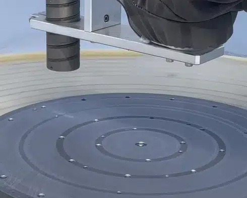
폴리실리콘 · CVD 반응기
반응기 내부의 실리콘 축적과 분진을 고압수·화학 스크러빙 대신 드라이아이스로 제거합니다. 표면 영향을 줄이면서 불순물 제거에 활용됩니다.
로봇과 드라이아이스 블라스터를 생산 라인에 연계해 반복 세척과 표면 전처리를 자동화합니다. COMBI PCS 구성에서는 드라이아이스 생산·공급·분사까지 하나의 시스템으로 연결할 수 있으며, 자동화 범위는 대상 공정과 현장 조건에 따라 달라집니다.
프로그래밍된 로봇 암에 드라이아이스 블라스터를 통합하면, 같은 표면에 같은 결과를 매 사이클 반복하는 정밀한 세척·표면 전처리·부품 마무리 패턴을 수행합니다. 시스템은 생산라인에 직접 통합되고, 완전 자동화 단계에서는 필요한 드라이아이스를 스스로 만들어 작업자 개입 없이 운전합니다.
COMBI PCS는 Cold Jet 펠렛타이저와 PCS 블라스터를 결합해, 드라이아이스를 만들면서 동시에 분사합니다. 로봇 셀이나 컨베이어 라인에 연결하면 작업자 없이 세척 공정이 돌아가고, 입자 크기·압력·공급량은 HMI에서 레시피로 저장해 반복합니다.
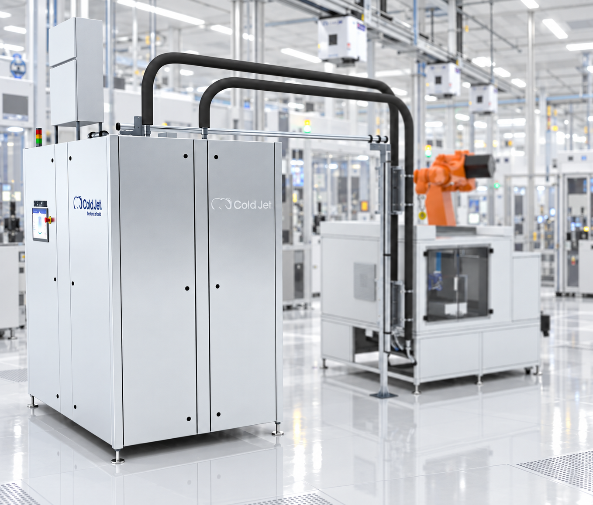
드라이아이스 세척은 로봇과 자동화 설비에 연동할 수 있습니다. 정해진 경로와 조건으로 세척을 반복하거나, 드라이아이스 펠렛의 생산·공급·블라스팅을 하나의 공정으로 연결할 수 있습니다.
로봇이 설정된 경로와 조건에 따라 드라이아이스를 분사하는 자동화 세척 시스템의 운전 모습입니다.
설정된 경로와 분사 조건을 반복 적용하여 작업자에 따른 세척 편차를 줄입니다.
세척을 생산라인에 연결하여 제품 이동과 대기 과정을 줄이고 연속 공정으로 구성할 수 있습니다.
반복 작업이나 접근이 어려운 구간의 세척을 자동화하여 작업자의 직접 작업을 줄일 수 있습니다.
드라이아이스는 분사 후 승화하므로 모래나 물과 같은 세척 매체가 별도의 폐기물로 남지 않습니다.
블라스터를 로봇 또는 자동화 설비에 연결하여 정해진 경로와 조건으로 반복 세척합니다.
드라이아이스 펠렛의 생산·공급·블라스팅을 연결하여 하나의 연속 공정으로 구성할 수 있습니다.
세척 대상, 생산속도, 설치환경 및 드라이아이스 사용량에 맞춰 필요한 자동화 범위를 구성합니다.
※ 자동화 범위와 시스템 구성은 세척 대상, 생산속도, 설치환경 및 필요한 드라이아이스 사용량에 따라 달라집니다.
생산라인에 통합하는 COMBI PCS 시리즈, 타이어 금형 세척을 위해 로봇·블라스터·제어를 하나로 묶은 ASP-T, 배관·덕트 내부를 사람 대신 주행하며 세척하는 DUCT ROBOT, 그리고 표준 제품으로 해결되지 않는 현장을 위한 맞춤 제작 시스템. 제품을 선택하면 사양과 구성 조건을 자세히 볼 수 있습니다.
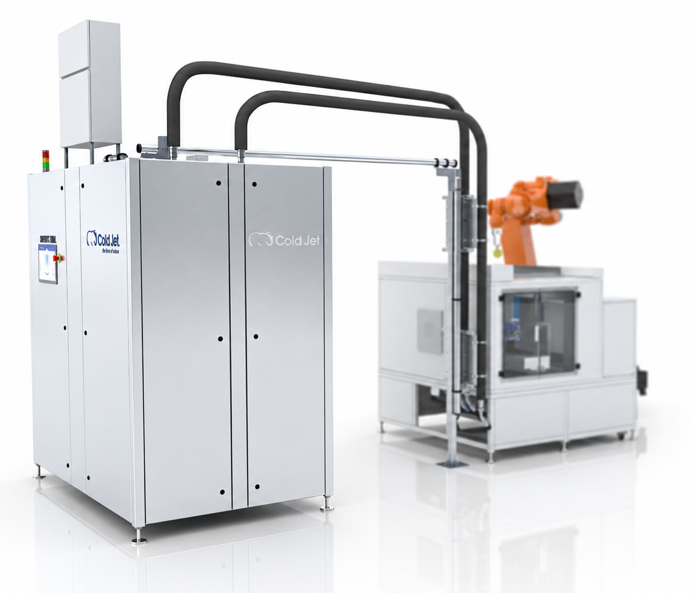
드라이아이스 펠렛타이저와 PCS 블라스터를 한 대에 결합한 완전 자동화 시스템입니다. LCO2를 공급받아 스스로 드라이아이스를 만들고, 0.3–3.0 mm 입자를 16" Beckhoff 산업용 HMI에서 제어합니다. 로봇 암, 블라스트 캐비닛, 컨베이어 라인에 연결해 연속 운전하며, 글로벌 통신사와 리퍼비시 업체의 고물량 허브에서 다년간 다교대 운전으로 검증되었습니다.
COMBI PCS 상세 보기 →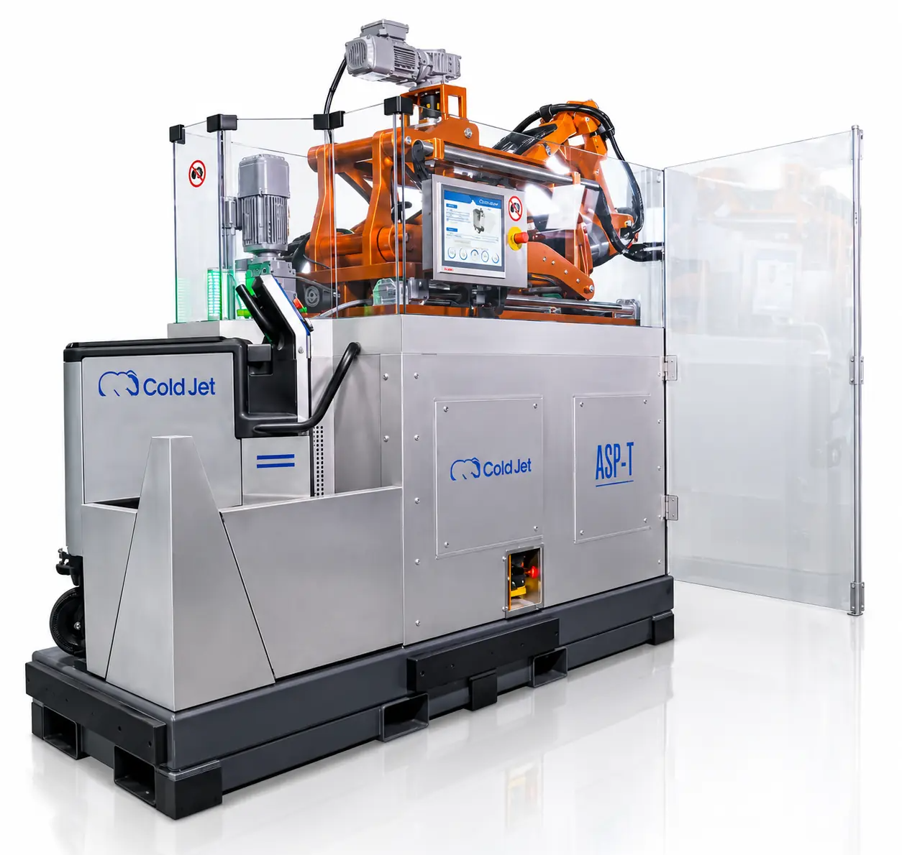
타이어 가황 프레스 앞으로 이동해 금형을 세척하는 전용 로봇 시스템입니다. KUKA 산업용 로봇과 PCS 60 블라스터, 타이어 산업 전용 노즐, 지능형 센서로 자동 센터링해 개방·폐쇄 세그먼트 상태 모두 세척합니다. 작업자 한 명이 운용하며 세척 리포트를 저장합니다.
ASP-T 상세 보기 →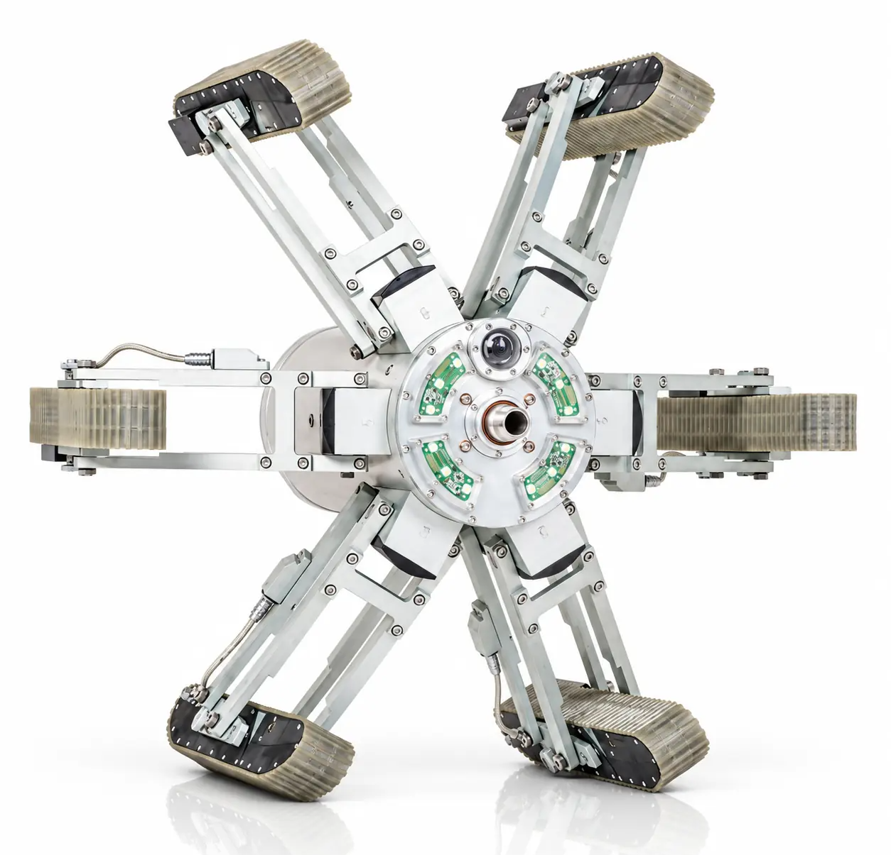
사람이 들어갈 수 없는 배관·덕트·텀블러·산업용 배기 내부를 로봇이 주행하며 드라이아이스로 세척합니다. 배관을 해체하지 않고 도장 부스 배기의 페인트·수지·고무 잔류, 주방 배기의 유지, 분진을 제거하며, 카메라로 내부 상태를 확인하고 기록합니다. 압축공기 세척과 브러시·흡입 모듈로 확장할 수 있습니다.
DUCT ROBOT 상세 보기 →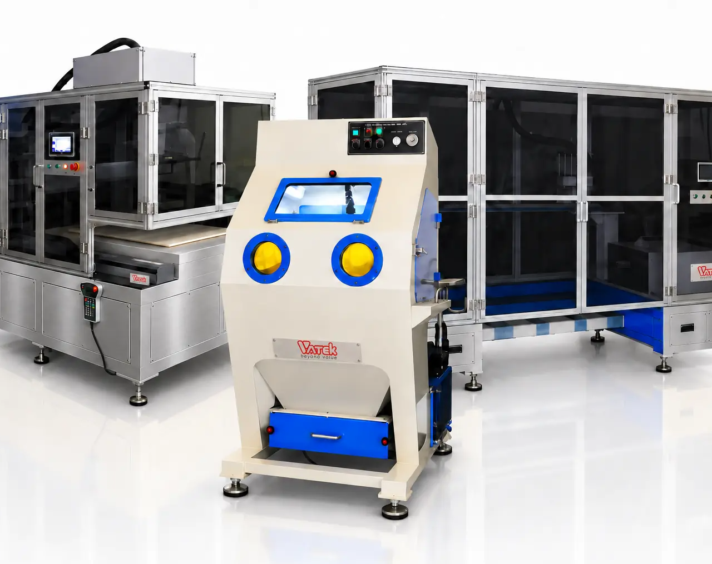
자동화 설비는 로봇과 블라스터를 연결하는 것만으로 완성되지 않습니다. 드라이아이스의 입자 크기와 공급 방식, 분사 압력, 노즐, 작업 거리와 각도 등 세척 결과를 좌우하는 조건을 함께 설계해야 합니다.
바테크는 오랜 현장 경험과 축적된 노하우를 바탕으로 고객의 제품과 생산 환경에 맞는 공정을 설계합니다. 또한 제작 관리부터 설치·시운전까지 전체 프로젝트를 책임 있게 관리하여, 실제 생산라인에서 안정적으로 운영할 수 있는 맞춤형 자동화 시스템을 구축합니다.
맞춤형 자동화 상담하기 →반도체 공장의 세척 조건은 그대로 수율과 비용으로 이어집니다. 수작업, 강한 화학약품, 긴 다운타임, 기판 손상 위험, 유해 폐기물. 드라이아이스 블라스팅은 비연마·무수분·무잔류 방식으로 장비를 분해하지 않고 제자리에서 세척하며, 로봇 셀로 통합하면 24시간 운전하는 생산라인의 일부가 됩니다.
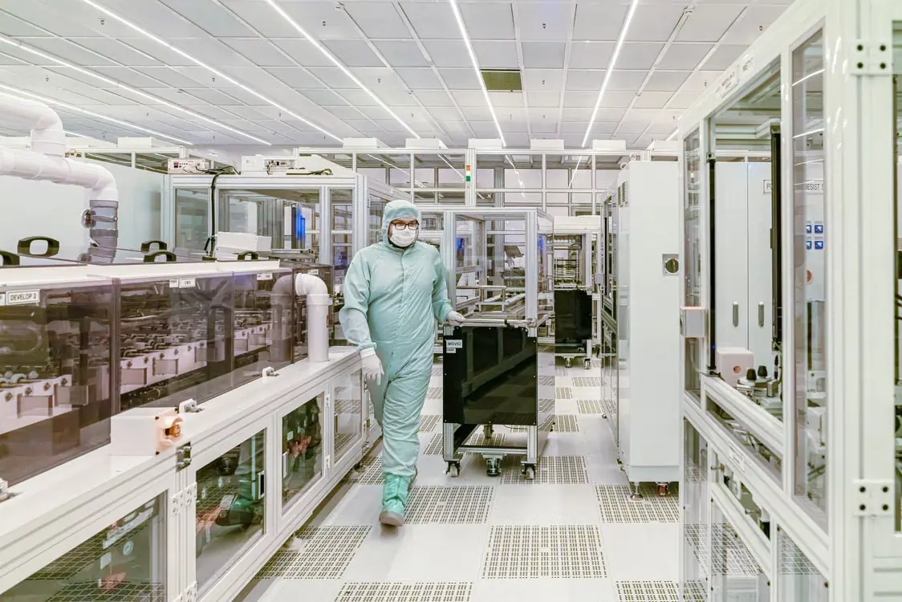
반도체·전자 제조에서는 설비 구조와 공정 조건에 따라 정밀하고 반복 가능한 세척 조건이 요구됩니다. 드라이아이스 블라스팅은 물을 사용하지 않는 비마모성 세척 방식으로, 조건에 따라 인플레이스 세척과 로봇 셀 연계를 검토할 수 있습니다. 단일 또는 복수 로봇 구성으로 공정에 맞는 자동화 시스템을 구성할 수 있으며, COMBI PCS는 자체 생산한 드라이아이스로 운전해 공급 공백 없이 라인을 유지합니다.

반응기 내부의 실리콘 축적과 분진을 고압수·화학 스크러빙 대신 드라이아이스로 제거합니다. 표면 영향을 줄이면서 불순물 제거에 활용됩니다.
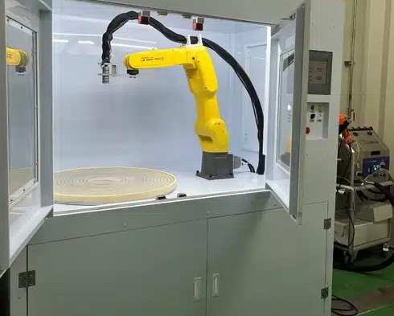
웨이퍼 챔버, 증착 툴링, 폴리싱 장비, 플라즈마 코팅 픽스처, 진공 펌프와 임플란터를 긁힘 없이 제자리에서 세척합니다.
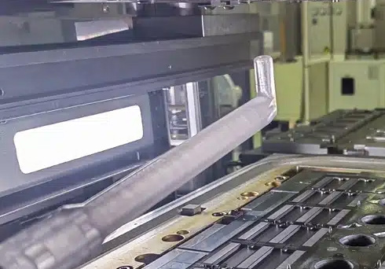
왁스·가스 축적으로 오염된 몰드와 다이를 뜨거운 상태에서 세척하고, 몰딩·레이저 커팅 후 남은 플라스틱 플래시와 접착제 제거에 활용되며, 칩 에지에 대한 영향을 줄이는 조건으로 적용할 수 있습니다.
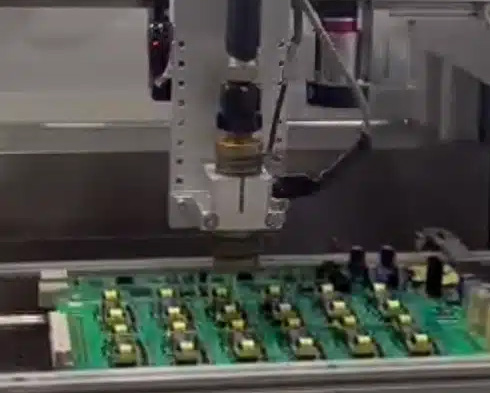
솔더 플럭스 잔류물과 솔더볼을 잔류 없이 제거하고, 컨포멀 코팅 전 표면 준비와 리워크 시 선택적 코팅 제거를 수행합니다. ICT 픽스처와 하네스도 수분 위험 없이 세척합니다.
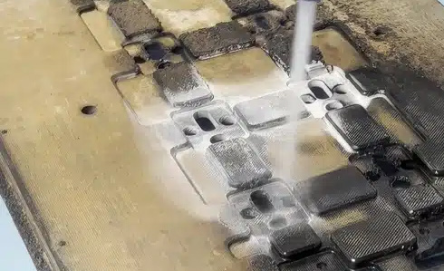
포고핀과 테스트 소켓에 축적된 미세 분진과 플럭스 등의 오염물 제거에 활용되며, 접점 상태를 관리하는 세척 공정으로 적용할 수 있습니다.
Cold Jet의 글로벌 서비스 네트워크와 바테크의 국내 기술 지원을 연계합니다. 바테크는 대한민국 공식 대리점으로 반도체·전자 현장의 테스트와 도입을 함께합니다.
반도체 공정 세척 테스트 문의 →자동화 드라이아이스 블라스팅은 세척뿐 아니라 사출 부품의 버 제거, 접착·도장 전 표면 전처리, 리퍼비시 제품의 외관 세척 등 다양한 공정에 적용할 수 있습니다. 로봇 셀이나 생산라인과 연계해 정해진 조건으로 반복 작업을 수행합니다.
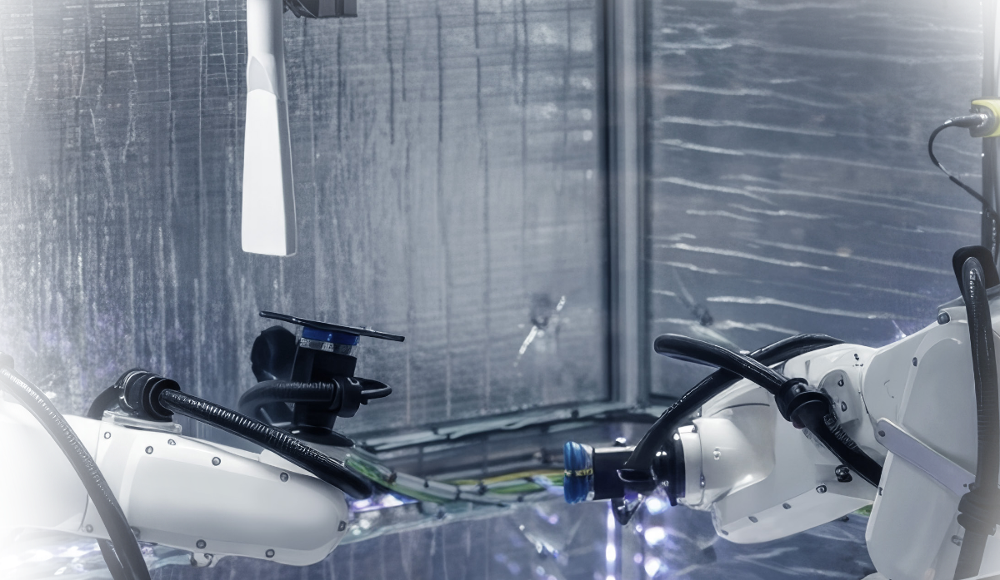
로봇 셀이 스마트폰 외관의 지문과 유분, 잔류물, 라벨 등을 수분 없이 제거합니다. 외관 상태를 일정하게 관리해 제품의 등급 분류와 재판매 준비를 돕습니다.
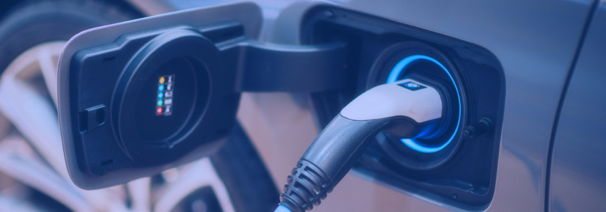
배터리 제조 과정에서 발생하는 원료 잔여물과 표면 오염을 제거하고, 접착과 조립 전에 필요한 표면 전처리를 수행합니다. 물이나 화학 세정제를 사용하지 않아 별도의 건조 공정이 필요 없습니다.
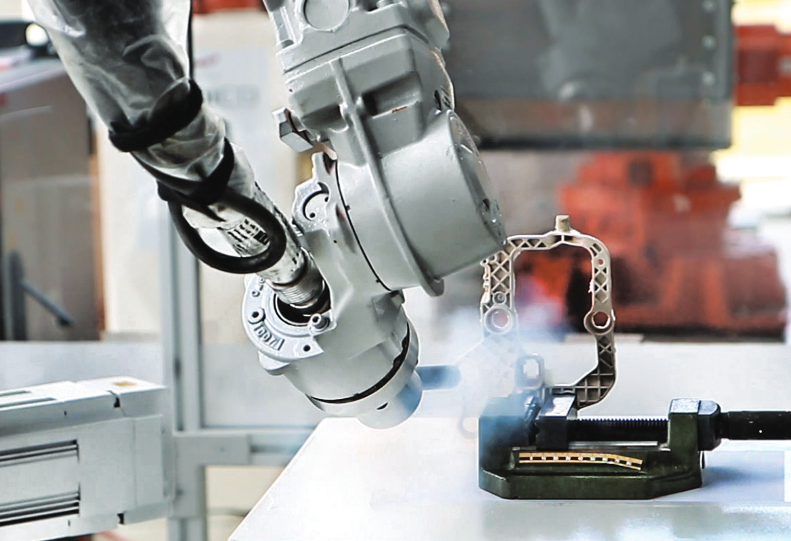
PEEK, PBT, 아세탈, 나일론, LCP, ABS, UHMWPE 등 다양한 소재의 플래시와 미세한 버를 제품의 치수와 표면에 미치는 영향을 최소화하며 제거합니다.
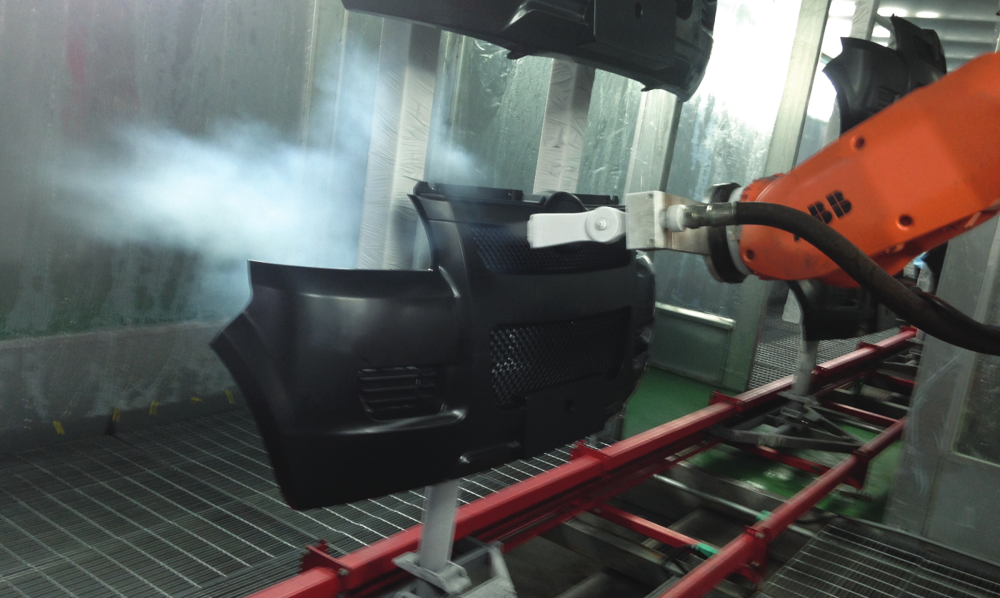
범퍼 등 플라스틱 외장 부품에 남은 이물질과 이형제를 컨베이어 라인에서 로봇으로 제거합니다. 물이나 화학 세정제를 사용하지 않아 별도의 건조 공정이 필요 없습니다.
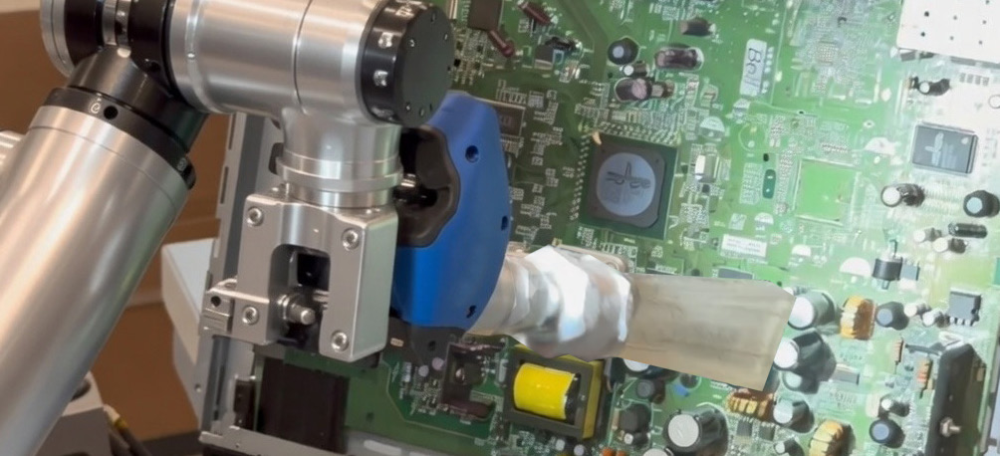
CVD 반응기, 웨이퍼 챔버, 몰딩 다이, PCB, 포고핀 등 정밀 부품에 남은 공정 오염물을 비연마성·무잔류 방식으로 제거합니다.
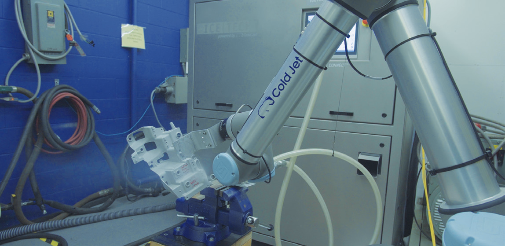
타이어 금형과 고무·플라스틱 금형을 프레스에서 분리하지 않고 고온 상태에서 세척합니다. 냉각과 분해, 재조립 과정을 줄여 설비 가동 중단 시간을 단축할 수 있습니다.
자동화 블라스팅은 장비 한 대만으로 완성되지 않습니다. 세척 대상과 오염 상태, 생산 주기부터 로봇 동선, 부스와 유틸리티까지 현장에 맞게 설계해야 합니다. 콜드젯과 바테크는 적용 검토부터 설치, 시운전과 교육까지 전 과정을 함께합니다.
세척 대상과 오염 상태, 생산 주기에 맞춰 장비와 노즐, 로봇 동선을 구성합니다.
현장 조건에 적합한 세척 방식을 제안하고, 샘플 테스트를 통해 적용 가능성을 확인합니다.
생산라인의 운전 조건과 드라이아이스 사용량을 고려해 안정적으로 가동할 수 있도록 시스템을 설계합니다.
드라이아이스 생산부터 공급·블라스팅까지 연결하거나, 기존 생산라인에 필요한 세척 공정만 자동화할 수 있습니다.
액체 CO2의 전환 효율을 높여 균일하고 밀도 높은 드라이아이스 펠렛을 안정적으로 생산합니다.
장비 상태와 운전 정보를 원격으로 확인하고, 이상 발생 시 빠른 진단과 대응을 지원합니다.
자동화 블라스팅 도입을 검토하는 고객이 가장 많이 묻는 질문을 정리했습니다.
네. 드라이아이스는 바로 승화하는 비연마·비전도성 매체로, 수분과 화학 잔류물을 남기지 않고 치수와 표면 마감을 바꾸지 않습니다. CVD 반응기, 웨이퍼 챔버·툴링, 몰딩 다이, PCB 플럭스, 포고핀·테스트 소켓 세척에 적용되고 있으며, PCS 입자 크기와 압력을 낮게 설정해 민감한 표면도 세척합니다. 바테크는 실제 부품으로 샘플 테스트를 먼저 진행합니다.
COMBI PCS는 통합을 전제로 설계되어 로봇 암, 블라스트 캐비닛, 컨베이어 세척 라인에 연결할 수 있습니다. 로봇과 블라스팅 부스는 장비에 포함되지 않으며, 현장의 로봇·PLC 사양을 확인한 뒤 구성합니다.
COMBI PCS는 액화탄산을 공급받아 스스로 드라이아이스를 만들기 때문에 별도 드라이아이스 공급이 필요 없습니다. ASP-T는 27 kg 호퍼에 3 mm 펠렛을 채워 사용합니다.
민감한 표면이나 미세한 버에는 작은 입자, 고착 오염에는 큰 입자가 맞습니다. PCS는 0.3–3.0 mm 사이 28단계로 입자를 잘라, 부품과 오염에 맞는 조건을 HMI 레시피로 저장하고 반복합니다.
DUCT ROBOT은 직경 350–1,350 mm 배관·덕트 안을 주행하며 드라이아이스를 분사하는 배관 내부 세척 로봇입니다. 배관을 해체하지 않고 도장 부스·용접·주방 배기의 잔류물, 텀블러와 사일로 내벽의 고착 오염을 제거하고, 전후방 카메라로 내부 상태를 기록합니다. 사람이 들어가지 않으므로 밀폐 공간 작업 위험도 사라집니다.
부품·오염 샘플 테스트로 세척 조건을 먼저 확인하고, 공정과 사이클 타임을 검토해 장비·로봇·부스 구성을 제안합니다. 이후 설치, 시운전, 운용 교육과 A/S까지 바테크가 지원합니다.
부품 샘플과 오염 종류, 목표 사이클 타임을 알려주시면 세척 테스트 결과와 함께 적합한 자동화 구성을 제안합니다.
바테크는 Cold Jet 대한민국 공식 대리점으로 현장 검토부터 설치, 시운전, 교육과 A/S까지 전 과정을 지원합니다.


Cold Jet은 현대식 드라이아이스 블라스팅 장비의 원천 특허를 보유한 기술 기업으로, 블라스터 · 드라이아이스 생산설비 · 노즐 · 자동화 솔루션을 개발하고 공급하고 있습니다.
1988년 설립한 바테크는 Cold Jet의 대한민국 공식 총판으로, 제품 공급뿐 아니라 세척 테스트, 렌탈 · 데모, 장비 선정, 설치, 기술지원과 A/S까지 국내 고객의 도입과 운용을 지원합니다.
바테크는 Cold Jet의 교육, 세미나 및 글로벌 컨퍼런스에 지속적으로 참여해 최신 기술과 적용 사례를 국내 고객 지원에 반영하고 있습니다.


“Cold Jet의 기술과
바테크의 국내 현장 경험을 함께 제공합니다.”